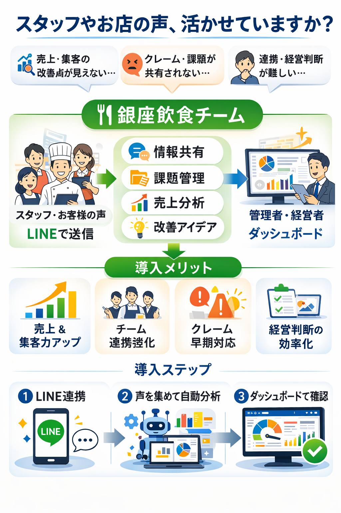

LINEの栄一ツールで相談
つながり先一覧
気になる相談先を、まずはAIに聞いてみる
すぐに問い合わせる前に、内容を整理したり、聞き方を相談したりできる一覧です。気になるジャンルを選んで、LINEのAIに軽く聞いてみてください。




LINEの栄一ツールで相談
気になる相談先を、まずはAIに聞いてみる
すぐに問い合わせる前に、内容を整理したり、聞き方を相談したりできる一覧です。気になるジャンルを選んで、LINEのAIに軽く聞いてみてください。
